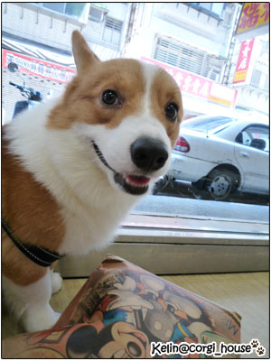
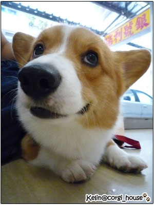
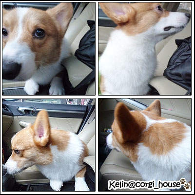
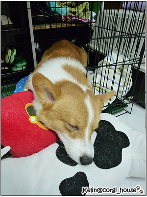
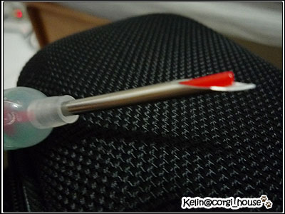

我家摩卡卡的寶貝蛋蛋沒有了！
我家摩卡卡的寶貝蛋蛋沒有了！
其實完成手術到今天已經一週嘍！禮拜五已經帶摩卡去拆完線，
傷口也持續在恢復中....請不用擔心！
話說摩卡卡已經又是一條活力超人狗了!

而且結紮這家庭重要事件一定要紀碌一下啦！也分享一下心得！
＝＝＝＝＝＝＝＝＝＝＝＝＝＝＝＝＝＝＝＝＝＝＝＝＝
4/24是預定幫摩卡卡結紮的手術日！
前一天醫生就提醒１２點過後要空腹！
當天早上我娘也一起陪他去，出門先清空一下肚子的便便呀！
誇講一下我家阿嬤，接屎的功力愈來愈強了！哈哈

送去醫院時，我整個就是緊張！因為完全沒經驗
傻阿卡還在車上欣賞沿路的小鳥...

到醫院，因為沒地方停車，我把我娘留在車上顧車
話說那天太陽超大，我忘了教我娘怎嘛把冷氣調大一點
結果回去的時候，我媽臉超紅的！哈哈
媽～我真的對不起你！

跟卡卡在醫院等醫生，傻阿卡還是開開心心的跟其他狗狗玩
也讓麻麻乖乖拍大頭狗照！好可愛歐！

12點醫生阿姨帶他進去準備，因為手術過程不能看
只能等到３點再去接他！這等待的時間真的很複雜啊！

3點我就等不及到醫院去看摩卡卡了！
他已經清醒坐好在籠子裡了，但樣子就是迷迷糊糊的感覺
而且下半身麻藥還沒退不太能動，他好緊張！
整個像毛毛蟲一樣一直蠕動想站起來，

回家讓他戴上生平第一次看到的喇叭頭套，他超不開心的！
戴上去就一動也不動的！定格..

so白天就沒讓他戴頭套，改採緊迫盯狗的方式防止他舔傷口
晚上我都還打地舖陪他睡 了一週
摩卡卡你長大了要孝順麻麻啊!

4/24 當天回來其實一切都還蠻平順的!
小鬼其實就是一直在睡覺，睡不停！
只是醫生特別交待要到半夜2點才能開始進食
不然到時候吐了會很麻煩！

但卡卡一直走到籠子裡討水喝~好可憐！
所以1點半的時候，就自以為差半小時應該還好！
讓他喝了一點點的水（真的只有一點點）
媽呀！沒多久他居然吐了!嚇死我了！
所以各位拔麻不要跟我一樣以為沒關係
如果的醫生有交待時間要乖乖的遵守啊！

這次結紮手術也順便幫摩卡卡植晶片
在他身上有晶片證明他是我的狗的感覺還不賴 哈！

原本很小就要帶他去，聽說針很粗，覺得應該很痛吧！
那天醫生也把針筒留給我~果然很粗啊！
怪不得6個月大的happy小妞去植了!叫了很大一聲!
＝＝＝＝＝＝＝＝＝＝＝＝＝＝＝＝＝＝＝＝＝＝＝＝＝＝＝＝＝＝＝＝＝
結紮到今天剛好一週嘍!傷口照顧上不會太難!
隔天很快就恢復活力了，因為餓翻了,食慾超好 哈！
只有戴頭套讓我覺得很可憐....但還是不可以心軟啊!
btw
結紮這件事在週遭也引發一些不同的觀點
轉貼一篇柴波家從尊重生命看結紮
很值得閱讀的一篇文章歐!